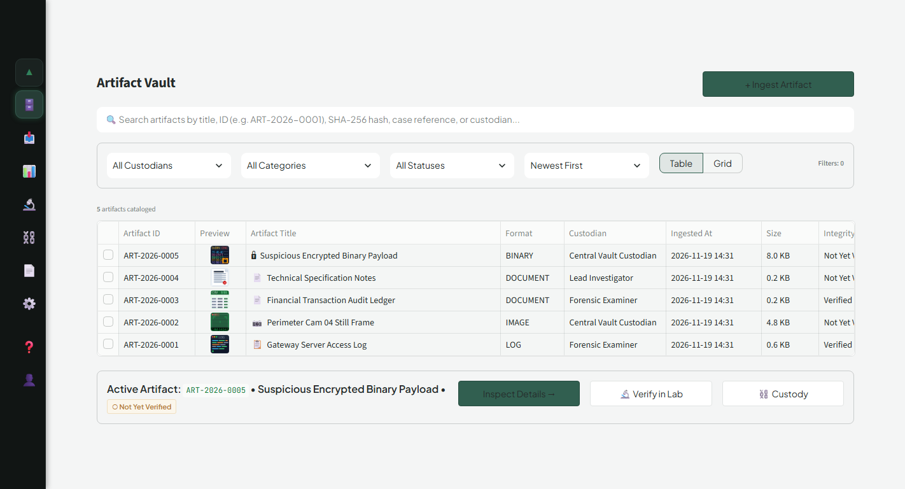

KUSTODRA
FORENSIC CUSTODY.
A digital forensic evidence management system and chain-of-custody laboratory — calculating dual-hash SHA-256 and Blake3 digests, logging cryptographic custody transitions, and generating automated legal compliance reports.

TAMPER-EVIDENT FORENSIC EVIDENCE INTEGRITY & AUDIT TRAILS.
Digital evidence in forensic investigations requires unassailable proof of authenticity. KUSTODRA guarantees artifact integrity through cryptographic dual-hashing, strict custody logging, and audit report generation.
Evidence Repository Vault
Centralized digital evidence locker tracking file size, original upload timestamp, case ID bindings, and custodian officer details.
Dual-Hash Integrity Lab
Computes SHA-256 and Blake3 cryptographic checksums simultaneously to guard against hash collisions and bit-flip degradation.
Chain-of-Custody Ledger
Chronological audit ledger logging every transfer of evidence custody between forensic examiners, law enforcement, and court archives.
Integrity Tamper Verification
Re-computes file checksums on demand to immediately flag any file corruption or unauthorized modification.
Court-Admissible PDF Export
Compiles comprehensive ReportLab PDF forensic certificates complete with verification stamps, timestamps, and officer credentials.
Process Flow Architecture
Visual diagram and compliance rules adhering to ISO/IEC 27037 standards for digital evidence handling.
HOW IT WORKS.
Air-gapped forensic evidence verification system powered by Python, hashlib, and Streamlit.
Artifact Intake
Digital evidence file loaded into secure quarantine folder.
Dual Hashing
Simultaneous streaming computation of SHA-256 & Blake3.
Custody Registration
Case ID, examiner identity, and timestamp logged to DB.
Periodic Audit
Scheduled hash re-verifications detect storage bit rot.
Dossier Export
Generates legally defensible PDF certificate of authenticity.
APPLICATION SCREENSHOTS.
Live screens captured from the running application. Click any image to view full size, or follow setup instructions in the GitHub repository.
FORENSIC CAPABILITIES & VERIFIED SPECS.
Key modules, rules, safety checks, and automated test results documented in the repository.
| Subsystem | Technical Implementation | Verified Capability |
|---|---|---|
| Cryptographic Digests | Streaming hashlib SHA-256 + blake3 | Dual collision-resistant hash signatures |
| Custody Governance | Relational audit logs with officer IDs | Unbroken chain-of-custody documentation |
| Legal Reporting | ReportLab PDF certification generator | Court-admissible forensic audit dossiers |
| Test Coverage | Pytest verification of forensic pipelines | 23 / 23 automated tests passed |
CORE TECHNOLOGIES.
Frameworks, databases, visualization tools, and testing libraries used in KUSTODRA.
FUTURE ENHANCEMENTS.
Upcoming improvements planned for KUSTODRA.
EXPLORE SOURCE & DOCS.
View the complete codebase, sample datasets, quick-launch scripts, and automated test suites on GitHub.